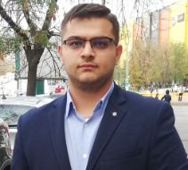

Second-life
battery screening
State-of-health screening of retired lithium-ion cells, open-circuit-voltage estimation, multi-chemistry testing and bidirectional DC-DC converters for test benches.
Doctoral researchElectrical engineering · Measurement · Batteries
Teaching Assistant, PhD · Faculty of Electrical Engineering
Connecting electrical measurements, second-life batteries and engineering education.
Department of Measurements, Electrical Apparatus and Static Converters
National University of Science and Technology POLITEHNICA Bucharest

Google Scholar metrics as of 28 October 2026.
Research interests
State-of-health screening of retired lithium-ion cells, open-circuit-voltage estimation, multi-chemistry testing and bidirectional DC-DC converters for test benches.
Doctoral researchData acquisition, measurement systems, calibration and metrological verification of power-quality instruments.
Explore the publicationsSerial communication protocols (UART, SPI, I²C, CAN) in teaching laboratories, FPGA decoding of sampled measured values for smart grids, and an open learning app.
Teaching profileResearch in practice
Doctoral research · National University of Science and Technology POLITEHNICA Bucharest
Open-source software · Faculty of Electrical Engineering, POLITEHNICA Bucharest
Data science · National University of Science and Technology POLITEHNICA Bucharest
Grid resilience · National University of Science and Technology POLITEHNICA Bucharest
Selected publications
U.P.B. Scientific Bulletin, Series C - Electrical Engineering and Computer Science · Vol. 87 · Issue 3
Batteries (MDPI) · Vol. 11 · Issue 5 · Article 186
Revue Roumaine des Sciences Techniques - Série Électrotechnique et Énergétique · Vol. 69 · Issue 3 · pp. 311-316
Software & open data
Two battery datasets on IEEE DataPort and an open-source learning app for electrical measurements.